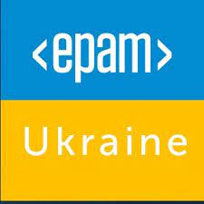

Maksym Shaposhnikov
RESUME SUMMARY
Advanced DevOps Engineer With Python Experience specialized in crafting and maintaining AWS-based cloud infrastructure. Proficient in Python, Bash, and automation tools like Ansible and Terraform.
My core competencies encompass architecting seamless continuous integration, delivery, and deployment pipelines using Gitlab CI/CD, Jenkins, Git, Docker, Vagrant, Argo CD/CD, and AWS/EC2.
- Strong understanding of DevOps principles and methodologies.
- Strong experience with Python
- Prometheus/Grafana, ELK Stack
- Proficiency in cloud infrastructure management using AWS.
- Experience in configuration management using Ansible,Terraform,Terragrunt.
- Working knowledge of Kubernetes and Docker containerization.
- Expertise in Continuous Integration/Deployment (CI/CD) using Jenkins and ARGO CI.
- Familiarity with scripting languages such as Python, Bash.
WORK Experience
Raiffeisen international - Senior Devops Engineer
Jan,2023 - now
- AWS multiaccount IAM roles and permissions maintanence ( Glue, Athena, EMR, Airflow crossaccount permissions hell maintenance
- Implement GitOps practices and container orchestration using Kubernetes,Harbor and Helm
- Simplifying Kubernetes for Data Scientists/Engineers: Developed user-friendly containers, enabling Data Scientists to utilize Kubernetes effortlessly. Achieved a complete transition to Kubernetes infrastructure with a 40% cost saving💸
- Reusable Data Pipelines: Assisted Data Engineers in accelerating their workflow by refining and creating reusable data pipelines, leading to a robust library of reusable data engineering tools.
- Designed and implemented end-to-end ETL workflows using Apache Airflow, orchestrating the extraction, transformation, and loading of data from diverse sources into a centralized data warehouse ( mostly CSV’s from S3 buckets ) .
- Developed and maintained simple Airflow DAG’s for scheduling and monitoring ETL tasks, ensuring timely and accurate data processing.
- Manage artifact repositories and enable Continuous Integration/Deployment (CI/CD) pipelines using Harbor and GitHub Actions Workflows
- Implement and enable monitoring solutions using Prometheus,Alertmanager,Blackbox and Grafana to ensure proactive issue detection and resolution
- Build and check security issues with Docker containers with Trivy
- Make crossaccount deployments for internal Bank teams with Terragrunt ( and make modules in Terraform for that )
- Utilized scripting (Python and Shell) for automation of routine tasks, improving operational efficiency.
- Actively participated in Agile and DevOps methodologies, contributing to the continuous improvement of development and deployment processes.
Zoolatec - Senior Devops Engineer
Dec,2020 - Jan,2023
- EMR (Elastic Map Reduse ) AWS based clusters,EMR servers templates, EMR studio deployment and Support, DataLake, Glue Databases and Tables, IAM roles, permissions and access
- Terragrunt multiaccount , multitieams architecture, deployment and development
- Kubernetes: Proficient in managing Kubernetes clusters, deploying and scaling applications, configuring networking, and troubleshooting issues.
- Helm: Skilled in utilizing Helm charts for packaging and deploying applications in Kubernetes, managing dependencies, and ensuring reproducibility.
- ArgoCD: Experienced in implementing ArgoCD for GitOps-based continuous deployment, automating application deployment and monitoring synchronization.
- GitOps: Proficient in applying GitOps principles to maintain infrastructure and application configurations as code, enabling automated deployments and version control.
- Continuous Integration/Continuous Deployment (CI/CD): Implementing and optimizing modern CI/CD pipelines to automate build, test, and deployment processes, ensuring rapid and reliable software releases based on Github Actions. Infrastructure as Code (IaC): Creating ifrastructure utilizing tools like Terragrunt/Terraform or Ansible to provision and manage infrastructure resources, enabling reproducibility and scalability. Importing Clickops based infrastructure to Terraform
- Scripting and Automation: Proficient in scripting languages (e.g., Bash, Python) and automation tools to streamline repetitive tasks, improve efficiency, and enhance system reliability.
- Monitoring and Logging: Experience with monitoring tools (e.g., Prometheus, Grafana) and log aggregation platforms (e.g., ELK Stack) to proactively monitor system health, identify performance bottlenecks, and troubleshoot issues.
Grid Dynamics - Senior Devops Engineer
Dec,2017 - Dec,2020
- Designed and managed the cloud infrastructure on AWS for PROD&&DEV environments.
- Developed scripts using Bash and Python to automate infrastructure deployments and configuration management.
- Implemented monitoring and logging systems to provide visibility to the infrastructure and applications.

EPAM Systems - Senior Devops Engineer
Feb 2014 - Apr 2017
- Design and develop continuous deployment pipeline, integrating Test-Kitchen, Docker, Git, Jenkins and Ansible across geographically separated hosting zones in AWS.
- Performed new Ansible automation to replace old-bash-style scripting tools to provide Continuous integration / Continuous delivery of results working of Development team.
- Performed custom Docker integration solution to run test suites (functional, unit, web, integration tests) - running tests in docker-compose created environment with hybris image and wide range of MySQL database versions.
- Developed fully completed CI/CD solution (Jenkins/Docker/Ansible based) from scratch to build and deploy artifacts starting from git pull and ending to checking Hybris startup logs and email notification to dev team members.
- Developed many fully customized Ansible playbooks for maintenance next application on customer cloud - Apache Solr Cluster, SMTP server Postfix.
- Also, created and maintained everyday ansible automation and special automated branch to GoLive production environments.
- Collect the new technologies and tools and introduced them to the client; in which way it helped the company build up an agile development environment - it improved the product quantity and the work efficiency.
- Developed automation and deployment utilities using Bash and Ansible.
- Designed and developed automated deployment and scaling processes based on Docker and Ansible for a wide range of server types and application tiers, including Elasticsearch, Tomcat, Varnish and SOLR Clusters.
- Wrote custom monitoring and integrated monitoring methods into deployment processes to develop self-healing solutions.
- Created automation and deployment templates for relational databases (standalone and RDS).
- Wrote custom monitoring and integrated monitoring methods into deployment processes to develop self-healing solutions (Zabbix && Ansible).